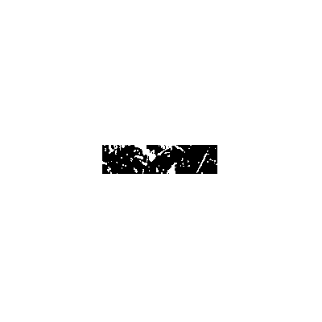
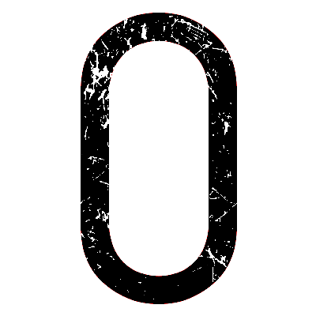
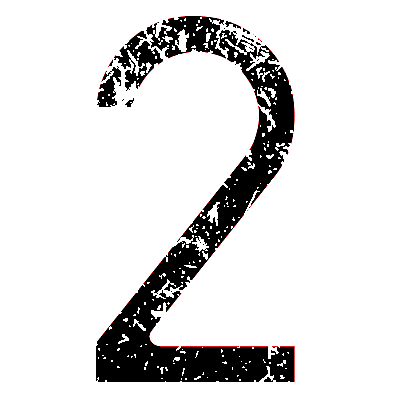
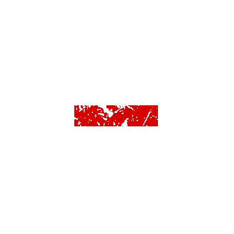
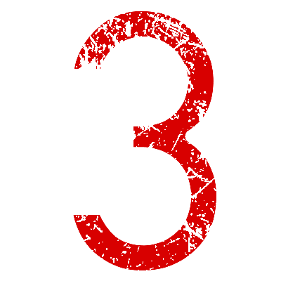

Number Decals
Perfect for adding numerical markings to your vehicles.
TO USE A DECAL: copy the decal's URL, select a decal in Sprocket Tank Design, and paste the link into the URL field.
- 
DIN Black -
https://sprockettools.github.io/numbers/DINBW-.png
- 
DIN Black 0
https://sprockettools.github.io/numbers/DINBW0.png
-
DIN Black 1
https://sprockettools.github.io/numbers/DINBW1.png
- 
DIN Black 2
https://sprockettools.github.io/numbers/DINBW2.png

DIN Black 3
https://sprockettools.github.io/numbers/DINBW3.png

DIN Black 4
https://sprockettools.github.io/numbers/DINBW4.png

DIN Black 5
https://sprockettools.github.io/numbers/DINBW5.png
-
DIN Black 6
https://sprockettools.github.io/numbers/DINBW6.png

DIN Black 7
https://sprockettools.github.io/numbers/DINBW7.png

DIN Black 8
https://sprockettools.github.io/numbers/DINBW8.png
-
DIN Black 9
https://sprockettools.github.io/numbers/DINBW9.png

DIN Olive -
https://sprockettools.github.io/numbers/DINOlive-.png

DIN Olive 0
https://sprockettools.github.io/numbers/DINOlive0.png
-
DIN Olive 1
https://sprockettools.github.io/numbers/DINOlive1.png
-
DIN Olive 2
https://sprockettools.github.io/numbers/DINOlive2.png
-
DIN Olive 3
https://sprockettools.github.io/numbers/DINOlive3.png
-
DIN Olive 4
https://sprockettools.github.io/numbers/DINOlive4.png

DIN Olive 5
https://sprockettools.github.io/numbers/DINOlive5.png
-
DIN Olive 6
https://sprockettools.github.io/numbers/DINOlive6.png

DIN Olive 7
https://sprockettools.github.io/numbers/DINOlive7.png
-
DIN Olive 8
https://sprockettools.github.io/numbers/DINOlive8.png

DIN Olive 9
https://sprockettools.github.io/numbers/DINOlive9.png
- 
DIN Red -
https://sprockettools.github.io/numbers/DINRed-.png
-
DIN Red 0
https://sprockettools.github.io/numbers/DINRed0.png

DIN Red 1
https://sprockettools.github.io/numbers/DINRed1.png
-
DIN Red 2
https://sprockettools.github.io/numbers/DINRed2.png
- 
DIN Red 3
https://sprockettools.github.io/numbers/DINRed3.png

DIN Red 4
https://sprockettools.github.io/numbers/DINRed4.png
-
DIN Red 5
https://sprockettools.github.io/numbers/DINRed5.png

DIN Red 6
https://sprockettools.github.io/numbers/DINRed6.png
-
DIN Red 7
https://sprockettools.github.io/numbers/DINRed7.png
-
DIN Red 8
https://sprockettools.github.io/numbers/DINRed8.png

DIN Red 9
https://sprockettools.github.io/numbers/DINRed9.png

DIN White -
https://sprockettools.github.io/numbers/DINWhite-.png
-
DIN White 0
https://sprockettools.github.io/numbers/DINWhite0.png
-
DIN White 1
https://sprockettools.github.io/numbers/DINWhite1.png

DIN White 2
https://sprockettools.github.io/numbers/DINWhite2.png
-
DIN White 3
https://sprockettools.github.io/numbers/DINWhite3.png

DIN White 4
https://sprockettools.github.io/numbers/DINWhite4.png
-
DIN White 5
https://sprockettools.github.io/numbers/DINWhite5.png

DIN White 6
https://sprockettools.github.io/numbers/DINWhite6.png
-
DIN White 7
https://sprockettools.github.io/numbers/DINWhite7.png

DIN White 8
https://sprockettools.github.io/numbers/DINWhite8.png
-
DIN White 9
https://sprockettools.github.io/numbers/DINWhite9.png
- 
DIN White O-
https://sprockettools.github.io/numbers/DINWhiteO-.png
- 
DIN White O0
https://sprockettools.github.io/numbers/DINWhiteO0.png

DIN White O1
https://sprockettools.github.io/numbers/DINWhiteO1.png
- 
DIN White O2
https://sprockettools.github.io/numbers/DINWhiteO2.png

DIN White O3
https://sprockettools.github.io/numbers/DINWhiteO3.png
- 
DIN White O4
https://sprockettools.github.io/numbers/DINWhiteO4.png

DIN White O5
https://sprockettools.github.io/numbers/DINWhiteO5.png

DIN White O6
https://sprockettools.github.io/numbers/DINWhiteO6.png

DIN White O7
https://sprockettools.github.io/numbers/DINWhiteO7.png
-
DIN White O8
https://sprockettools.github.io/numbers/DINWhiteO8.png

DIN White O9
https://sprockettools.github.io/numbers/DINWhiteO9.png